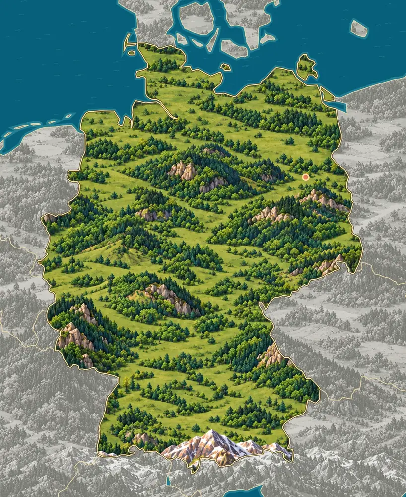
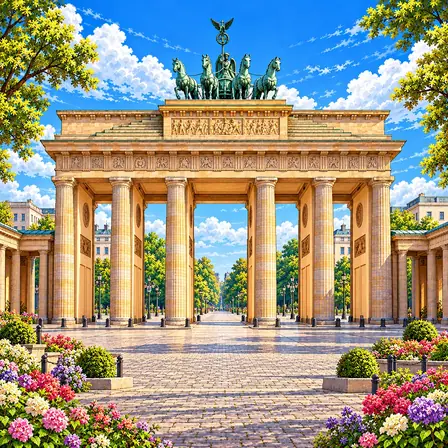
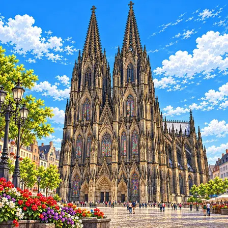
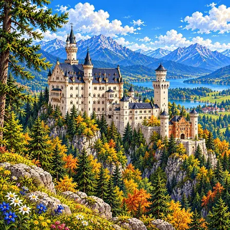
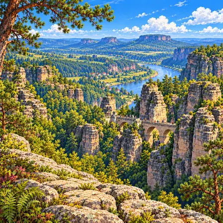
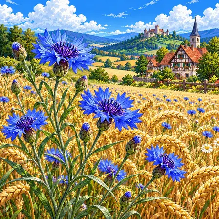
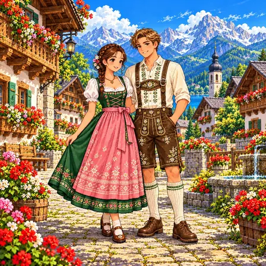
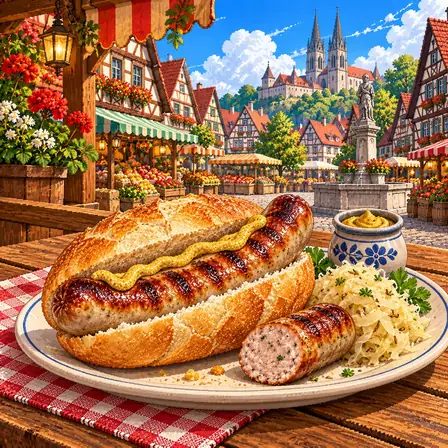
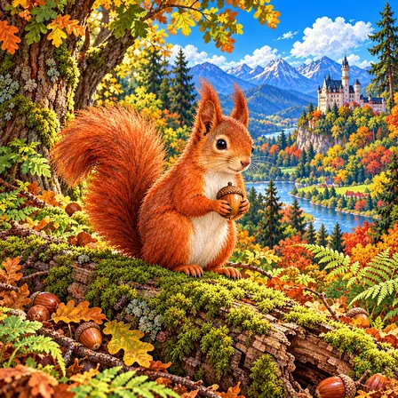
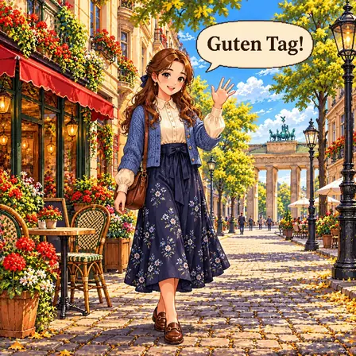

북쪽 평야에서 남쪽 산으로
독일 북쪽은 바다 가까이 펼쳐진 낮고 평평한 땅이에요. 남쪽 끝의 알프스에는 독일에서 가장 높은 산인 추크슈피체(2,962m)가 있어요.
출처: deutschland.de, Germany: geography and climate · NASA Earth Observatory, Spring Snow Cover in the Alps

독일은 북쪽이 낮고 평평하고, 남쪽으로 갈수록 땅이 높아져요. 가운데에는 숲이 덮인 낮은 산들이 많아요. 남쪽 끝에는 눈 덮인 알프스가 있어요.
독일은 북쪽의 북독일 평야, 가운데의 숲이 많은 중부 산지, 남쪽의 알프스로 나뉘어요. 북쪽은 북해와 발트해에 닿아 있어요.
독일 북쪽은 바다 가까이 펼쳐진 낮고 평평한 땅이에요. 남쪽 끝의 알프스에는 독일에서 가장 높은 산인 추크슈피체(2,962m)가 있어요.
출처: deutschland.de, Germany: geography and climate · NASA Earth Observatory, Spring Snow Cover in the Alps
나라 가운데에는 높지 않은 산과 언덕이 이어지고, 넓은 숲이 덮고 있어요. 이 숲 가운데 오래된 너도밤나무 숲 몇 곳은 유네스코 세계자연유산이에요.
출처: UNESCO, Ancient and Primeval Beech Forests of the Carpathians and Other Regions of Europe
북쪽은 서쪽의 북해, 동쪽의 발트해에 닿아 있어요. 북해 바닷가의 바덴해는 물이 빠지면 모래와 진흙 갯벌이 드러나는 곳으로, 이어진 갯벌로는 세계에서 가장 넓어요.
출처: deutschland.de, Germany: geography and climate · UNESCO, Wadden Sea
라인강은 독일 서쪽을 남에서 북으로 흘러요. 빙겐과 코블렌츠 사이 약 65km 구간에서는 강이 산지를 깎아 깊은 골짜기(협곡)를 만들었고, 비탈에는 포도밭과 성이 늘어서 있어요.
알프스는 아프리카 쪽 땅덩어리가 유럽 쪽으로 밀고 들어오면서 땅이 구겨져 솟은 산맥이에요. 빙하가 산을 깎아 뾰족한 봉우리와 골짜기를 남겼어요.
프랑크푸르트 가까운 메셀 구덩이에서는 약 4,700만 년 전 호수 바닥에 쌓인 진흙 속 화석이 나와요. 뼈가 다 갖춰진 동물 화석은 물론 배 속에 남은 먹이까지 보여, 포유류가 퍼져 나가던 시대를 알려 줘요.
독일에서 잘 알려진 도시, 역사유산, 자연, 식물, 문화, 음식, 동물, 인사말, 국기를 한 장씩 그렸어요.

베를린은 독일의 수도예요. 한때 도시를 동서로 가르던 장벽이 있었지만, 지금은 사라지고 흔적만 남아 있어요. 옛 건물과 새 건물이 함께 어울리는 도시예요.
베를린은 독일의 수도로 인구 약 390만 명이 살아요. 13세기 슈프레강 섬에서 시작됐으며, 1701년 프로이센 왕국·1871년 독일 제국 수도로 성장했어요. 1961~1989년 동서를 가르던 장벽이 세워졌다가 철거됐고, 1990년 통일 후 수도가 됐어요. 세 시대(제국·나치·분단)의 유적이 도시 곳곳에 공존하며, 도시 재건 과정이 현대 도시계획의 사례로 연구돼요.

쾰른 대성당은 두 개의 뾰족한 탑이 하늘 높이 솟은 성당이에요. 다 짓는 데 600년이 넘게 걸렸어요. 알록달록한 유리창이 아주 아름다워요.
쾰른 대성당은 1248년 착공해 1880년 완성된 고딕 양식의 대성당이에요. 632년에 걸쳐 지어진 셈이에요. 높이 157m의 두 첨탑과 13세기 제작된 중세 스테인드글라스가 유명해요. 나폴레옹 침공과 2차 대전 공습에서 기적적으로 살아남은 도시 상징이에요. 독일 최다 방문 명소이자 유네스코 세계유산이에요.

노이슈반슈타인 성은 알프스 산자락의 바위 언덕 위에 선 하얀 성이에요. 중세 기사 이야기를 좋아한 루트비히 2세 왕이 지었어요. 디즈니 성을 만들 때 본보기가 됐어요.
노이슈반슈타인 성은 바이에른 알프스 산자락의 가파른 바위 언덕 위에 세워진 낭만주의 성이에요. 바이에른 왕 루트비히 2세가 1869년 착공했으며, 현실 정치보다 중세 기사 문화와 바그너 오페라를 동경한 왕의 이상을 건축으로 구현했어요. 비잔틴·로마네스크·고딕 양식이 혼합된 역사주의 건축의 대표작으로, 디즈니 성의 원형이 됐어요. 17년 공사 중 왕이 사망해 미완성으로 남았어요.

작센 스위스에는 기둥처럼 솟은 바위 봉우리가 1,000개가 넘어요. 강물과 비바람이 오랜 세월 바위를 깎아 만들었어요. 바위 사이를 잇는 돌다리에서 보는 풍경이 멋져요.
작센 스위스는 독일 동부 엘베강을 따라 펼쳐진 사암 산악 지대예요. 약 1억 년 전 백악기 얕은 바다에 모래가 쌓여 굳은 사암층을 엘베강과 비바람이 오랜 세월 깎아내면서, 1,000개가 넘는 기둥 모양 바위 봉우리와 깊은 골짜기가 만들어졌어요. 바위 사이를 잇는 바스타이 다리에서 보는 풍경이 특히 유명해요. 19세기 낭만주의 화가들이 즐겨 그린 곳이며, 자유 암벽 등반이 시작된 지역 중 하나로 알려져 있어요.

수레국화는 여름에 밀밭과 들판에 피는 파란 꽃이에요. 황금빛 밀밭 사이에서 파란색이 눈에 확 띄어요. 독일에서 오랫동안 사랑받아 온 꽃이에요.
수레국화는 독일의 밀밭과 들판에서 여름에 피어나는 꽃이에요. 선명한 파란색 꽃잎이 특징으로, 황금빛 밀밭 사이에 피어난 파란 수레국화는 독일 농촌 풍경의 상징이에요. 소박하고 강인한 아름다움으로 오랫동안 사랑받아 왔으며, 프로이센 왕실과도 인연이 깊은 꽃이에요.

디른들은 독일 남부 여자들이 입는 앞치마 달린 전통 옷이에요. 레더호젠은 남자들이 입는 가죽 반바지예요. 가을 축제 때 많은 사람이 이 옷을 차려입어요.
디른들은 독일 남부 바이에른 여성들이 입는 전통 의상으로, 블라우스와 조끼, 폭넓은 치마, 앞치마로 이루어져요. 레더호젠은 가죽으로 만든 남성용 반바지로, 멜빵과 자수 장식이 특징이에요. 원래 알프스 농촌에서 일할 때 입던 튼튼한 옷이었어요. 매년 가을 뮌헨에서 열리는 옥토버페스트에는 600만 명이 넘는 사람들이 모이는데, 많은 이들이 이 전통복을 입고 참가해요. 알프스 마을의 축제에서도 여전히 즐겨 입어요.

브라트부르스트는 숯불에 구운 독일 소시지예요. 지역마다 크기와 맛이 달라 종류가 40가지가 넘어요. 빵 사이에 끼우고 겨자를 발라 먹어요.
브라트부르스트는 다진 돼지고기에 향신료를 섞어 만든 독일식 구이용 소시지예요. 700년 전 기록이 남아 있을 만큼 역사가 깊고, 지역마다 조리법이 달라 종류가 아주 많아요. 뉘른베르크 소시지는 손가락만큼 작고, 튀링겐 소시지는 길고 굵어요. 숯불에 구워 겨자를 곁들이고 빵에 끼워 먹는 것이 기본이에요. 장터와 축제, 축구장 앞에서 빠지지 않는 독일 대표 길거리 음식이에요.

붉은 다람쥐는 붉은 털과 풍성한 꼬리를 가진 다람쥐예요. 가을이면 도토리를 땅에 묻어 두는데, 잊어버린 도토리에서 새 나무가 자라요. 겨울에는 귀 끝에 긴 털이 자라요.
유럽 붉은 다람쥐는 붉은 털과 겨울에 길게 자라는 귀 끝 털, 풍성한 꼬리가 특징인 다람쥐예요. 독일의 숲과 공원에서 도토리, 잣, 버섯을 먹으며 살아요. 가을이면 겨울 식량으로 도토리를 땅 곳곳에 묻어 두는데, 일부를 잊어버려 그 자리에서 새 나무가 자라나요. 긴 꼬리는 나무 사이를 뛰어다닐 때 균형을 잡아주고 잘 때는 이불이 돼요. 나뭇가지 위에 둥근 공 모양 둥지를 지어 살아요.

구텐 탁(Guten Tag)은 독일어로 '좋은 날'이라는 낮 인사예요. 아침에는 '구텐 모르겐'이라고 해요. 친구끼리는 짧게 '할로'라고 인사해요.
Guten Tag은 '구텐 탁'이라고 읽으며 '좋은(guten) 날(Tag)'이라는 뜻의 독일어 인사말이에요. 낮에 쓰는 정중한 인사로, 아침에는 '구텐 모르겐', 저녁에는 '구텐 아벤트'라고 해요. 친구끼리는 짧게 '할로'라고 인사해요. 독일어는 유럽연합에서 모국어 인구가 약 1억 명으로 가장 많은 언어예요. 낱말을 기차처럼 길게 이어 붙여 새 단어를 만드는 것으로 유명해요.

독일 국기는 검정, 빨강, 금색 세 줄로 되어 있어요. 맨 아래 색은 노랑이 아니라 '금색'이라고 불러요. 색의 순서가 바뀌면 다른 깃발이 돼요.
독일 국기는 위에서부터 검정·빨강·금색 세 개의 가로줄로 이루어져 있어요. 이 세 색은 19세기에 독일의 여러 지역이 하나의 나라로 모이기를 바라던 사람들이 쓰던 색이에요. 1949년에 지금의 국기로 정해졌어요. 맨 아래 색은 노랑이 아니라 '금색'이라고 부르는 것이 공식 명칭이에요. 검정·빨강·금색의 순서가 바뀌면 다른 깃발이 되므로 순서가 중요해요.